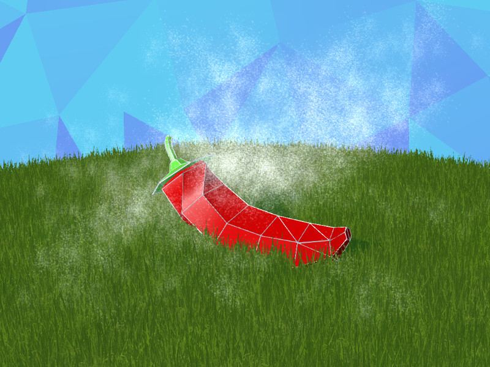
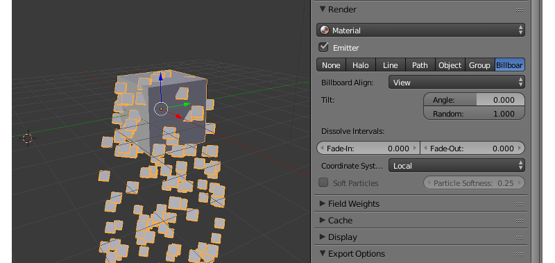

粒子系统,流体¶
目录
粒子系统旨在可视化现象如由烟、 火、 水溅、 引起的其他无数小物体的运动。
一个粒子系统要求有发射器-一个物体来定义粒子流的位置和传出的方向。
用法¶

设置¶
粒子系统参数可以在 Particles 选项卡下进行设置。支持每个发射多个粒子系统。
基本设置¶
- 名字
粒子系统名称。默认名称是 “ParticleSystem” 。
- 设置
参照粒子系统的设置数据块。该数据块的设置可以在不同粒子系统之间共享。
- 类型
粒子系统类型:
Emitter或Hair.Hair粒子系统可以用于创建许多副本的 （称为实例化） 的物体。默认值为Emitter.- 随机种
粒子系统产生的随机数的表格索引。缺省值是0。
发射设置¶

- Emission > Number
粒子的数目。默认值为 1000。
- Emission > Start
粒子发射开始的第一帧。缺省值为1.0。
- Emission > End
粒子发射结束的最后一帧。默认值为200.0。
- Emission > Lifetime
粒子以帧为单位的寿命。默认值是50.0。
- Emission > Lifetime > Random
生存期随机因子。默认值为 0.0。
- Emission > Emit From
发射源类型。支持以下类型︰
Verts（从顶点发出），Faces（从多边形发出）。默认值为Faces.- Emission > Cyclic emission
该选项启用循环发射模式。它可以用于永久效果 （如烟，燃烧，水溅）。建议设置的
Emission > Start的值为零。默认为禁用。- Emission > Allow NLA
激活此选项将允许粒子发射由NLA进行控制。默认情况下启用。
- Emission > Random Delay
该选项允许启用粒子随机发射时间。默认情况下禁用。
方向设置¶
- Velocity > Emitter Geometry > Normal
沿着发射器的网格法线的发射影响因子。缺省值为1.0。
- Velocity > Other > Random
随机的发射方向的因子。默认值是0.0。
旋转设置¶
- Rotation > Angular Velocity > Mode
模式为粒子广告牌的自转。
Hair粒子系统支持所有类型的旋转，Emitter只支持Velocity。- Rotation > Angular Velocity > Factor
粒子广告牌旋转速度的因子。默认值为 0.0。
物理设置¶

- Physics > Type
物理计算类型:
No,Newtonian,Keyed,Boids,Fluid. 由引擎忽略。总是用Newtonian。默认值为Newtonian。- Physics > Size
粒子大小。默认值为 0.05。
- Physics > Mass
粒子质量。影响与力场 （风能） 的互动。默认值是 1.0。
- Physics > Forces > Brownian
导出但是不在引擎中使用。
渲染设置¶
- Render > Material
选择粒子材质的菜单。用于发射器有多个材质的情况下的粒子材质。默认值为
Default Material。- Render > Emitter
启用场景中发射器渲染。默认情况下启用。
- Render > Type
粒子渲染模式：
None，Halo，Line，Path，Object，Group，Billboard。该引擎支持Object和Object和Group分别实例化模式。其他模式将被忽略。推荐使用Billboard模式，广告牌方便的显示。默认值是Halo。- Render > Billboard Align
广告牌的方式取向：
View- 按照相机，XY plane，YZ plane，ZX plane- 对准相应的平面（在世界坐标搅拌机系统）。默认值是View。- Render > Tilt
这组参数控制初始的广告牌飞机倾斜。它是由两个参数︰
- 角度
广告牌平面的旋转角度。它的值可以从-1 到 1。旋转 180 度的值为 1 （即颠倒广告牌）。设置为零，默认情况。
- 随机
倾斜的随机变化。它的值可以从零到 1 更改，默认情况设置为零 。
- Render > Dissolve intervals > Fade-in and Fade-out
开始和结束的时间间隔（以帧测量的）为逐渐增加和减小粒子的透明度。
- Render > Coordinate System
发射粒子的坐标系统：
Local- 使用局部坐标发射物体的系统，World- 使用世界坐标系。- Render > Soft Particles
支持软粒子，它的广告牌与表面接触时能够消融。使用
Particle Softness滑块来调整这种效果。
粒子系统中的纹理¶
粒子系统支持标准和节点的材质。支持的材质类型包括 Surface 和 Halo。此外支持 Halo 类型的材质，如 Rings, Lines 和 Star Tips，所有其他设置。
粒子材质的纹理¶
Surface 粒子材质它是 要求 有漫射纹理 （通常带 alpha 通道）。在 Mapping > Coordinates 菜单中选择 UV 选项。 请确保发射器的网格有 UV 层。
对于 Halo 粒子的材质，这是 可以 使用 Blend 纹理一个 Linear 梯度。在 Mapping > Coordinates 菜单中选择 Strand / Particle 选项。它要求对纹理启用 Ramp 。


{kind=link}
{kind=link}
{kind=link}
{kind=link}